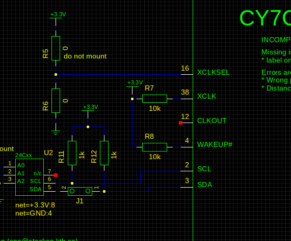
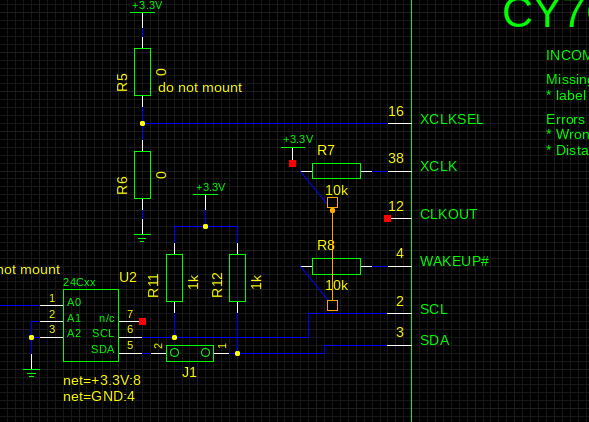

FAQ
I want new instances to get assigned a new unique name automatically.
Add this to your xschemrc file:
set disable_unique_names 0
By default XSCHEM allows instance name (Refdes) duplicates in the schematic. This must be resolved by the user normally, before exporting any netlist. The Hilight - Highlight duplicate instance names (k key) menu entry can be used to mark the components that need to be renamed. The Highlight - Rename duplicate instance names menu entry can be used to automatically rename the last added components so that they have an unique name. Using the above mentioned xschemrc option will automatically rename any added refdes that clashes with existing names.
Why do i have to press 'm' to move a component instead of just click and drag?
XSCHEM is intended to handle very big schematics, mouse drags are used to select a rectangular portion
of the circuit to move / stretch, if a mouse click + drag moves components it would be very easy to move
things instead of selecting things. This happens with geda-gschem for example:

Here i want to select the R7 and R8 resistors, so i place the mouse close to the upper-left R7 boundary and
start dragging, but since clicking also selects nearby objects the wire gets selected and moving the mouse will move the wire.

This behavior is considered not acceptable so clicking and dragging will never modify the circuit.
Pressing 'm' (for move) or 'c' (for copy) makes the behavior more predictable and safer. A new user just needs to get used to it.